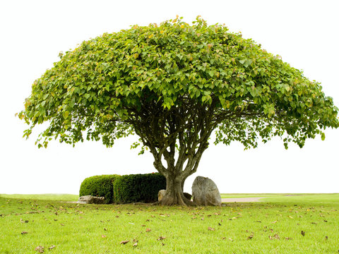

Sal Tree
Sal wood is hard, solid and immune to termites, fungi, and dampness. It is ideal for structural elements like drawers because of these characteristics. It takes polishing poorly but can be painted.

Peepal Tree
Peepal tree also known as Bodhi Satva Vruksha is a sacred tree that holds a major religious, spiritual significance. Known for its therapeutic properties the bark, roots, leaves, fruits of this wonder tree are used extensively in Ayurveda for treating lung disorders, skin conditions and various digestive issues.
Mango Trees
The tree is evergreen, often reaching 15–18 metres (50–60 feet) in height and attaining great age. The simple leaves are lanceolate, up to 30 cm (12 inches) long. The flowers—small, pinkish, and fragrant—are borne in large terminal panicles (loose clusters)

Teak Tree
Teak wood tends to be a golden or medium brown. Its color darkens over time. Teak is known for its incredible durability and water resistance. Teak has a high oil content, giving it the highest decay-resistance among all natural wood products.

Pine Tree
The chief economic value of pines is in the construction and paper-products industries, but they are also sources of turpentine, rosin, oils, and wood tars. Edible pine seeds, which are sold commercially as pine nuts, pignoli, piñons, or pinyons, are produced by several species.